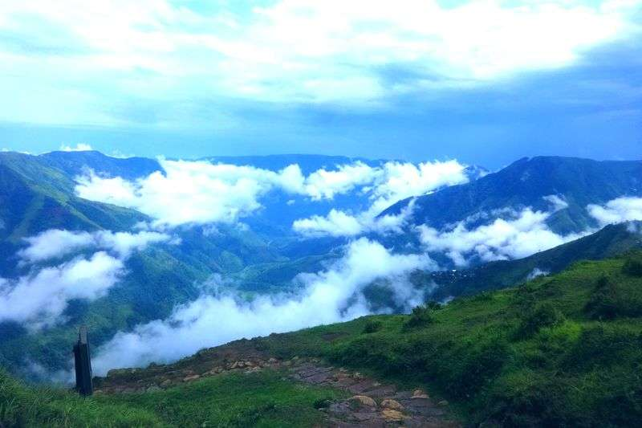

Jowai is a beautiful town in the Jaintia Hills known for waterfalls, lakes, caves, and culture. Attractions like Krang Suri Falls and Thadlaskein Lake attract many visitors. The region is rich in Khasi and Jaintia traditions and festivals. Green landscapes and peaceful surroundings make it ideal for relaxation. Jowai is perfect for nature and culture lovers.

Krang Suri Falls is one of the most beautiful waterfalls in Meghalaya. The waterfall is famous for its bright blue water and stunning surroundings. Visitors can swim, relax, and enjoy the peaceful atmosphere near the falls. Wooden pathways and viewpoints offer amazing scenic views. It is one of the most photogenic places in Meghalaya.

Nartiang is famous for its ancient monoliths and historical importance. The stone structures were built by the Jaintia kings many centuries ago. The village reflects the rich cultural heritage of the Jaintia Hills. Visitors can explore historical monuments and peaceful surroundings. It is a great destination for history and culture lovers.

Thadlaskein Lake is a peaceful lake near Jowai surrounded by green hills and forests. The lake is known for its calm atmosphere and scenic beauty. Visitors enjoy boating, picnics, and relaxing near the water. It is one of the best places in Jaintia Hills for nature lovers. The lake becomes especially beautiful during sunrise and sunset.

Laitlum Canyon is famous for its breathtaking valley views and dramatic cliffs. The canyon is surrounded by rolling green hills and cloudy skies. Visitors enjoy trekking, photography, and watching sunrise and sunset views. The peaceful environment makes it perfect for relaxation. It is one of the most scenic viewpoints in Meghalaya.